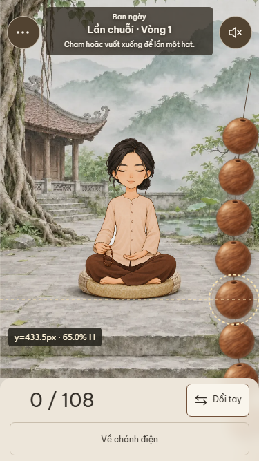
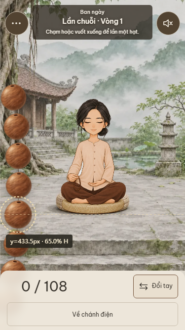
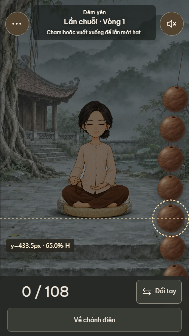
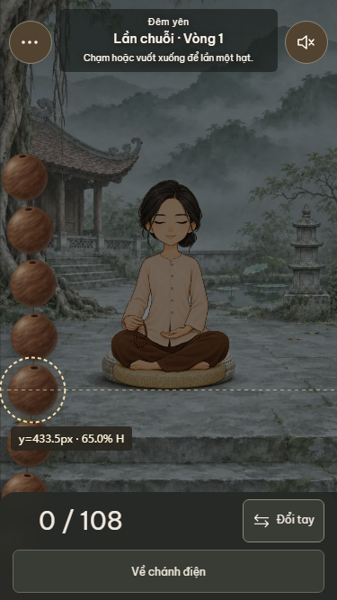
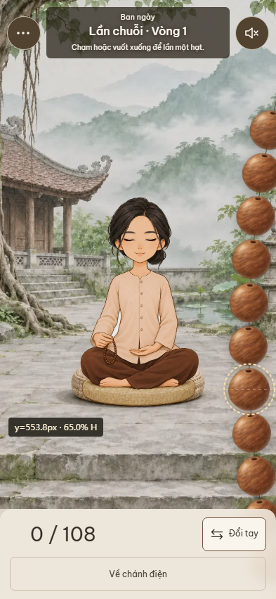
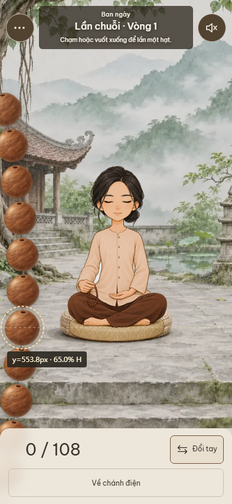
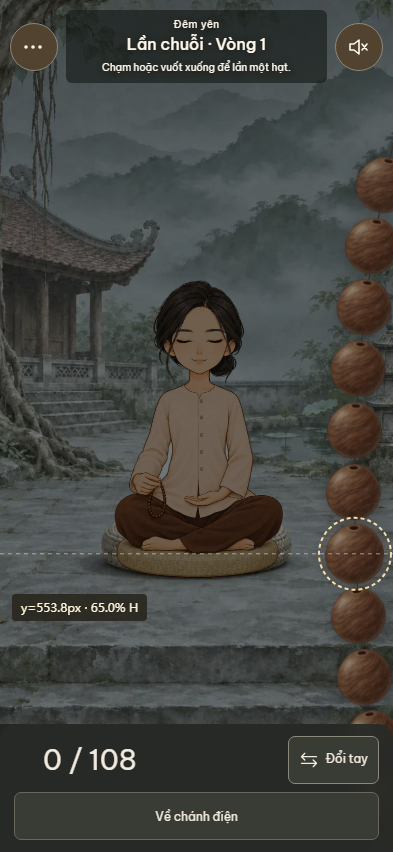
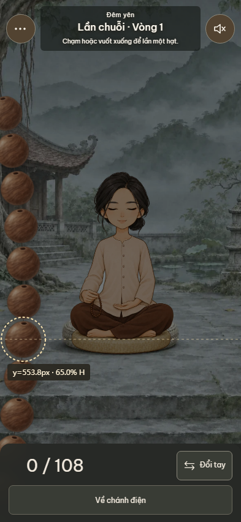

保留面板位置，以屏高65%为准。虚线和y值为交付图标注，不出现在页面里。
| 尺寸 | 拇指y | 占屏高 | 距面板 |
|---|---|---|---|
| 375×667 | 433.5px | 65.0% | 113.5px |
| 390×844 | 548.6px | 65.0% | 167.4px |
| 393×852 | 553.8px | 65.0% | 170.2px |
| 430×932 | 605.8px | 65.0% | 198.2px |
六个人物 × 四种尺寸 × 左右手共48组；按alpha>0完整包围盒（含蒲团）保守断言，另扫描整个可见弧线及母珠流苏，最小间距 30.68px。







